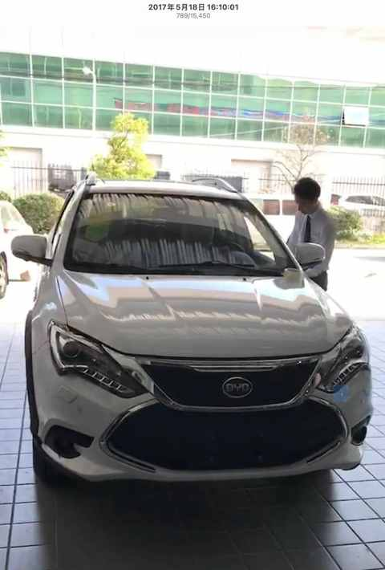
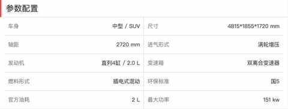
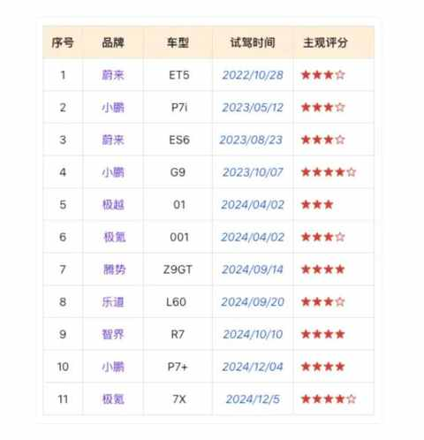
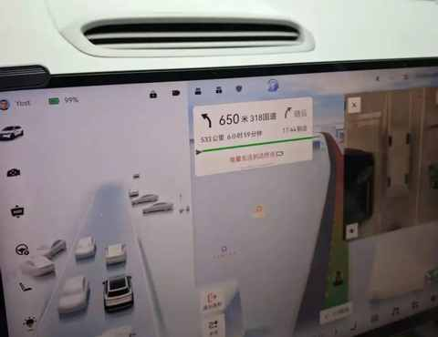
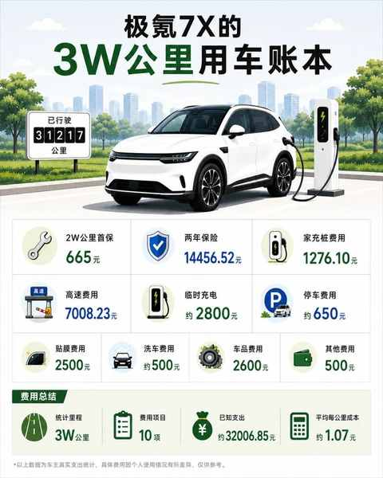

从比亚迪唐到极氪7X：9年新能源车主的23篇真实用车记录
从比亚迪唐到极氪 7X，我把 9 年新能源车经历做了仔细的梳理，因为如果只看单篇文章，我写的新能源汽车系列好像有点散。

一会儿写极氪 7X 开到 3 万公里花了多少钱，一会儿写纯电车跑春运，一会儿写前备箱，一会儿写车品，一会儿又写从插混换到纯电后的变化。
但回头看这几年写过的 23 篇新能源车内容，我发现它们其实都在回答同一件事：
普通家庭长期使用新能源车之后，真正会在意什么？
我不是专业车评人，也不太适合写那种新车首发、赛道测试、智驾横评。
我的特点更简单直接一点：
- 开过 7 年插混，从比亚迪唐换到极氪 7X；
- 极氪 7X 也已经开了 3 万多公里；
- 经历过日常通勤、接送孩子、长途自驾、春运、保险、保养、充电、车品消费和各种琐碎场景。
这些经历一点也不酷，但足够真实。
所以我准备把过去 9 年的新能源车内容，整理成 5 个系列。以后如果你是第一次看到我的文章，也可以从这 5 个问题开始看。
一、从插混到纯电：开了插混后，为什么换纯电？
我最早不是纯电车主，而是插混车主，第一辆车是： 比亚迪唐 2015 年款。



开了 7 年比亚迪唐之后，我最终换到了极氪 7X。

在换车前的一年多的时间试驾了10多款自主品牌的新能源车型：
前比亚迪车主，聊聊试驾的 11 款自主品牌纯电车：小鹏、蔚来、极氪……

换车后，我最常被问到的问题是：
从插混换到纯电，会不会后悔？
如果只用一句话总结我的感受，我会说：
不后悔，插混给人踏实感，纯电给人更轻松的日常使用体验。
插混的好处很明显：可油可电，长途时不用担心补能，日常短途可用电跑。对于很多刚接触刚新能源的人来说，插混确实是一种比较友好的过渡方案。
但纯电用久了之后，会发现完全够用，补能早已不是问题。
尤其当你有稳定充电条件之后，很多问题会变得很简单。日常开车不太需要管油耗，不用想着混动模式，也不用纠结什么时候该用油、什么时候该用电。电不够了就充，够用就开。
之前写过这些文章：
开了7年混动后，我为何最终投向纯电？一位车主的心路历程
从插混换到纯电，一年开 2 万公里后，我已经不在意能耗和没有里程焦虑
开了 7 年混动后投向纯电 9 个月，生活有了哪些新变化？
这个系列想回答的不是 “插混好还是纯电好”，而是：
不同阶段、不同补能条件、不同家庭需求下，哪种补能形式更适配你的用车场景。
如果你正在纠结第一台新能源买纯电、插混还是增程，这个系列会比较适合你。
二、极氪 7X 长期用车报告：忘记参数，回归体验
极氪 7X 是我现在最主要的用车内容来源，这辆车是家庭唯一用车。

刚提车时，我也会关心配置、空间、续航、车机、智驾、舒适性这些东西，但开到 3 万公里后，我越来越明显地感觉到：
车评看参数，长期车主看用车习惯、使用成本和真实的使用场景。
一辆车即使是简单试驾个半小时，很多优点和缺点都能被感受到：
动力强不强、屏幕大不大、座椅舒不舒服、音响好不好听，这些都很容易在短时间内被感知。
但长期用车不一样，你会更在意一些更琐碎和细节的东西：
- 每天上下车顺不顺手；
- 接送孩子时后排好不好用；
- 后备箱能不能装下日常杂物；
- 车机有没有真正减少麻烦；
- 保险和保养到底贵不贵；
- 哪些配置刚开始新鲜，后来已经忽略；
- 哪些功能看起来普通，却每天都离不开。
我已经写过这些极氪 7X 文章：
- 极氪7X开到3万公里，保养、充电、保险一共花了多少钱
- 从新鲜到习惯：16 个月开极氪7X跑3万公里后，离不开的与已忽略的
- 11 个月，开极氪7X跑两万公里，用车总结及好物分享
- 老车主终于去试驾了焕新版极氪7x：情绪依然稳定！
这个系列以后会继续写。
我更想做的是“长期车主使用报告”，而不是单次体验。
比如 4 万公里、5 万公里之后，车的状态有没有变化？哪些问题会暴露？哪些配置的价值会下降？哪些使用习惯会留下来？
这些内容未必适合短视频爆点，但对真正准备买车、长期用车的人来说，可能更有参考价值。
三、纯电长途与春运实录：焦虑的不只是续航
很多人讨论纯电车，最容易谈到里程焦虑，尤其是长途出行的时候叠加上节假日的buff，简直是难上加难。

我以前也会在意这个问题。但开纯电跑过几次长途，尤其经历过两次春运之后，我对这件事的理解变了。
纯电长途焦虑不只是续航，更多是路线、时间、补能和家人情绪。
一辆纯电车能不能跑长途？当然能。
但纯电长途和油车长途的逻辑不一样。
油车的补能更自由，加油几分钟就能走。纯电车则需要把充电和休息、吃饭、上厕所、孩子活动结合起来。规划做得好，体验并不差；规划做得不好，就容易焦虑。
以往写过这些文章：
纯电车自驾游： 6 天 3300km 之后有了 5 个感受
100度纯电SUV第2次春运实录：去程充电1次，返程学会了「下高速」
想通了！开电车真没必要里程焦虑：实测续航够用，充电方便
电车春运 2300km 的智驾感受：用了就真回不去啦！
这个系列的核心并不是想证明 “纯电车长途毫无压力”，更不想说服谁。
我觉得，纯电车跑长途最值得写的是如何应对不确定性：
有时候不是车到不了目的地，而是你不知道下一个桩靠不靠谱；不是续航不够，而是家人在车上已经累了；不是充电太慢，而是你没有把充电安排进休息节奏里。
所以这个系列后面会继续更新：
- 纯电长途如何规划；
- 带孩子跑长途要注意什么；
- 春运时如何判断服务区充电是否可靠；
- 智驾在长途里到底是减负，还是制造新的负担；
- 纯电车长途最大的成本是不是时间。
我想写的不是“纯电车长途能不能跑”，而是：
普通家庭如何让纯电车的长途出行确定性更足一点，体验更好一些。
四、真实用车账本：省不省钱，要看总账
如果说哪类文章最容易被搜索、收藏和转发，我觉得是真实账本类。
因为它回答的了一个最朴素的且大家最关心的问题：
新能源车到底省不省钱，长期用车究竟要花多少钱？
但这件事不能只看充电费，这只是一个小小的切面。
因为充电费确实比加油低不少，尤其有家充时，日常成本极低。只说“每公里几分钱”，很容易把问题说的过于简单了，补能只是用车的一个方面，我们应该算总账，计算每一项真实的开支：
- 保险；
- 用车场景；
- 保养；
- 轮胎；
- 高速充电；
- 停车；
- 车品；
- 各种配件；
- 充电条件；
- 一年到底开多少公里。

今年写过两篇复盘文章：
极氪7X车品消费复盘：2600元花出去后，哪些后悔，哪些离不开？
极氪7X开到3万公里，保养、充电、保险一共花了多少钱
后面我很想补几篇：
- 《极氪 7X 保险为什么这么贵？》
- 《有家充和没家充，纯电成本差多少？》
- 《从比亚迪唐到极氪 7X：插混和纯电真实成本对比》
- 《极氪 7X 开到 4 万公里，一共花了多少钱？》
- ……
这个系列会是我后面最重要的内容之一，因为普通人买车用车，必须精打细算，最终都必须回到钱上来。
不是每个人都关心 0-100 加速情况，也不是每个人都关心智能座舱和辅助驾驶，但大多数人一定都会关心的事情是：
这车买回来以后，一年到底要花多少钱？
我的核心判断是：
纯电车省的是能耗，但我们要算总账，总账要看保险、高速、家充和用车频率。
如果一年只开几千公里，纯电的低能耗优势未必那么明显；但如果一年开两万公里以上，又有稳定充电条件，新能源的成本优势就会更容易体现出来。
账本不是为了证明某种车一定更划算，而是为了让选择更具体，从而能对应都自己的用车场景和需求。
五、车品复盘：能减少麻烦的东西，才值得留下
车品内容很容易写成“好物推荐”。
但我不想这么写，也不会这么写，因为开了这么多年车之后，我越来越觉得：
车品不是越多越好，长期来看，车主最该买的是能提供方便且减少麻烦的东西。
在提车前后，人难免很容易进入一种购物兴奋期。

脚垫、后备箱垫、收纳盒、充气泵、腰靠、颈枕、雨伞、遮阳帘、车载充电器、放电枪、各种小配件，看起来都很有用。
但真正开一段时间之后，你会发现很多东西只是“想象中有用”。
真正留下来的，往往有几个共同点：
- 使用频率高；
- 不需要额外维护；
- 不占太多空间；
- 遇到问题时真的能减少麻烦；
- 家人也能感受到它的价值。
我写过：
因为，前备箱真的很有用！
弯路没白走！8年新能源车主的真心话：这8件车载用品，让高速用车体验提升
弯路没少走！8年新能源车主的真心话：这10件车载好物，日常用车离不开！
别再问我省多少油钱了！作为 8年新能源车主，我想说：是为了新的体验
后面这个系列我会继续写，但会尽量避免写成带货文。
我更想写的是：
- 哪些车品提车后不要急着买；
- 哪些东西开久了才知道离不开；
- 哪些车品看起来好，但不适合家庭用车；
- 哪些车品买完之后会后悔。
我希望它更像长期车主的复盘，而不是购物清单。
为什么要整理成 5 个系列？
整理这些文章时，我越来越发现，新能源车内容不能只写单篇。
单篇文章解决一个具体问题，但系列才能让读者知道你是谁。
我的定位更像是：
9 年新能源车主，从比亚迪唐到极氪 7X，只写普通家庭长期用车后的真实反馈。
这也是我后面想继续坚持的方向。
新车发布很多，参数变化很快，平台热点也会不断变化。但普通家庭真正关心的问题，其实一直很稳定：
- 第一台新能源怎么选；
- 插混、纯电、增程怎么判断；
- 纯电车能不能跑长途；
- 一年到底花多少钱；
- 哪些车品真的值得买；
- 家庭用车哪些细节最重要。
这些问题都不新鲜，都是老生常谈的问题，但都足够真实。
而我能提供的价值，也不是告诉你哪台车一定最好，而是把我自己开过、用过、花过钱、踩过坑、留下来的经验说清楚。
后面准备怎么写？
接下来，我会优先补这几类内容：
第一，继续写极氪 7X 长期体验。 比如 4 万公里、5 万公里总结，以及长期使用后哪些配置真正高频。
第二，继续补真实账本。 比如保险、家充、插混和纯电成本对比。
第三，写一篇“人生第一台新能源怎么选”。 把补能、通勤、长途、家庭空间、品牌售后这些问题放在一起讲。
第四，继续做车品复盘。 但重点不是推荐更多东西，而是判断哪些东西长期真的有用。
第五，把旧文章重新整理成合集。 让第一次看到我的读者，也能顺着一个系列慢慢看下去。
最后
如果你正在考虑新能源车，尤其是家庭第一台新能源，我建议不要只看新车发布会，也不要只听一些诸如：“油车稳” 或“新能源香” 之类的口号。
更好的方式，是先梳理清楚自己的真实需求和用车场景：
- 有没有稳定充电条件？
- 一年大概开多少公里？
- 长途多不多？单程多少公里？
- 家里几个人用车？
- 看重辅助驾驶吗？
- 你最在意的是省钱、空间、舒适、品牌，还是少操心？
- ……
这些问题，比单纯讨论“油车还是新能源” 重要且具体的多。
这也是我后面要继续写新能源车相关内容的原因，不是为了证明哪条路线绝对正确，而是想用一个普通家庭长期车主的视角，把这些问题写得更具体一点。
如果你刚好也关注新能源车，希望这些真实记录能帮你少走一点弯路。